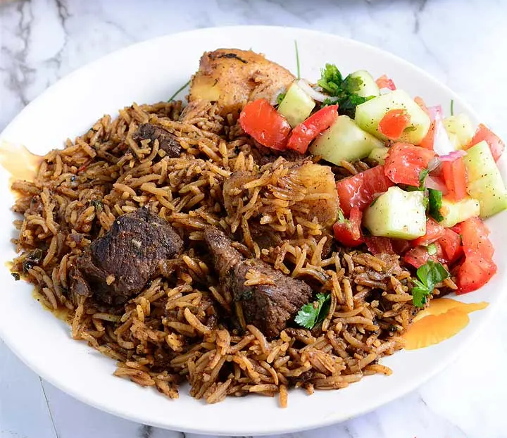

Pilau is a traditional fragrant rice dish made with aromatic spices that adds succulent flavor to the dish. Its origin date back to the 1400s, from the Indian people. It is most likely to be served in various events from weddings to buffets etc. I chose to make it alongside a chick-fil-A chicken and guess what, I wrote the whole recipe down.
But if yo lazy ahh dont wanna read em instructions, shi I gotchu
Ingredients
Spices
1 teaspoon cloves
2 tablespoon cumin seeds
1/2 tablespoon black peppercorn seeds
1 stick cinnamon
Rice
2 cups basmati
1/4 cup vegetable oil
onion
2 cloves garlic
ginger
1 tablespoon pilau masala
4 cups water
salt
How to make Rice Pilau

PS: you might want to play sumn meanwhile
Toast and blend the pilau masala: In a medium saucepan over medium heat.
Fry onions: Place onion in cooking oil until it caramelizes(about 10 - 15 minutes). Stir in the garlic, ginger and serrano pepper.
Stir in the tomatoes and cook till it dissolves.
Add water and bring to aboil. Stir in the rice then cover tightly.(aluminium foil then the lid)
leave to cook on a low heat for 20 minutes until the liquid is absorbed fully
Serve hot! Enjoy.
Making Grilled Chicken
Ingredients:
4 boneless, skinless chicken breasts (you can use drumsticks if you prefer)
Marinade of your choice
Salt and pepper to taste
Optional: additional seasonings like paprika or cayenne pepper
In a medium saucepan over medium heat.
Prepare the Marinade: In a bowl, combine your marinade ingredients. Common marinade ingredients include olive oil, lemon juice, minced garlic, and a variety of herbs and spices. You can get creative with your flavors. Make sure to include some acid (like lemon juice or vinegar) to help tenderize the chicken.
You can also use pre-made marinades or dressings if you prefer a quick and easy option.
Marinate the Chicken: Marinate the Chicken:
Place the chicken breasts in a resealable plastic bag or a shallow dish.
Seal the bag or cover the dish and refrigerate for at least 30 minutes, but longer is better for maximum flavor. Marinating for 2-4 hours or even overnight is ideal.
Preheat the Grill: Preheat your grill to medium-high heat (about 375-400°F or 190-200°C). Make sure the grates are clean and lightly oiled to prevent sticking.
Prepare the Chicken for Grilling: Remove the chicken from the marinade and let excess marinade drip off. You can also season the chicken with salt, pepper, and any additional seasonings at this point
Grill the Chicken: Place the chicken on the preheated grill. Grill for about 6-8 minutes per side, depending on the thickness of the chicken breasts. You want the internal temperature to reach 165°F (74°C) for chicken to be fully cooked. Use a meat thermometer to check the temperature
Slice the grilled chicken and serve it with your favorite side dishes. Grilled vegetables, a fresh salad, or some rice are great options.